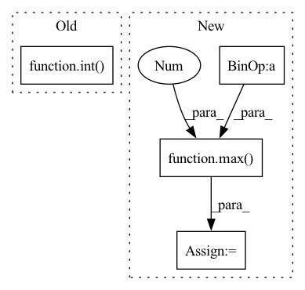

Pattern ID :14109
Before Change
(int(box[2]), int(box[3])),
color, 2)
cv2.putText(orig_image, class_name,
(int( box[0]) , int(box[1]-5)),
cv2.FONT_HERSHEY_SIMPLEX, 0.7, color,
2, lineType=cv2.LINE_AA)
return orig_imageAfter Change
// Get all the predicited class names.
pred_classes = [classes[i] for i in outputs[0]["labels"].cpu().numpy()]
lw = max( round(sum(orig_image.shape) / 2 * 0.003), 2 ) // Line width.
tf = max(lw - 1, 1) // Font thickness.
// Draw the bounding boxes and write the class name on top of it.
for j, box in enumerate(draw_boxes):In pattern: SUPERPATTERN
Frequency: 4
Non-data size: 4
Instances Fragment ID: 47103244
Project Name: sovit-123/fastercnn-pytorch-training-pipeline
Commit Name: 9892a401f4e8e2da1cbb938669fc88853710abcc
Time: 2022-09-22
Author: sovitrath6@gmail.com
File Name: utils/annotations.py
M Class Name: AnonimousClass
N Class Name: AnonimousClass
M Method Name: inference_annotations(5)
N Method Name: inference_annotations(5)
M Parent Class:
N Parent Class:
M File Name: utils/annotations.py
N File Name: utils/annotations.py
M Start Line: 17
M End Line: 27
N Start Line: 16
N End Line: 44
Before Change
if exists(mask):
logits = logits.masked_fill(~mask, -torch.finfo(logits.dtype).max)
num_keep = max(1, int( (1 - dropout) * n) )
keep_indices = logits.topk(num_keep, dim = 1).indices
batch_indices = torch.arange(b, device = device)After Change
logits = logits.masked_fill(~mask, -torch.finfo(logits.dtype).max)
keep_prob = 1. - dropout
num_keep = max(1 , int(keep_prob * n))
keep_indices = logits.topk(num_keep, dim = 1).indices
batch_indices = torch.arange(b, device = device)
batch_indices = rearrange(batch_indices, "b -> b 1")
seq = seq[batch_indices, keep_indices]
if exists(mask):
seq_counts = mask.sum(dim = -1)
seq_keep_counts = torch.ceil(seq_counts * keep_prob).int()
keep_mask = torch.arange(num_keep, device = device) < rearrange(seq_keep_counts, "b -> b 1")
mask = mask[batch_indices, keep_indices] & keep_mask
Fragment ID: 47103228
Project Name: lucidrains/perceiver-pytorch
Commit Name: c8c5f5721520460369a66b8a0e9c5147df4a883e
Time: 2022-12-04
Author: lucidrains@gmail.com
File Name: perceiver_pytorch/perceiver_io.py
M Class Name: AnonimousClass
N Class Name: AnonimousClass
M Method Name: dropout_seq(3)
N Method Name: dropout_seq(3)
M Parent Class:
N Parent Class:
M File Name: perceiver_pytorch/perceiver_io.py
N File Name: perceiver_pytorch/perceiver_io.py
M Start Line: 40
M End Line: 51
N Start Line: 40
N End Line: 56
Before Change
xpos = self._legend_border + i
relv = float(i) / float(canvas_width)
r = max(0, min(255, int( bar_curve[0].get_value(relv) * 255.0) ))
g = max(0, min(255, int(bar_curve[1].get_value(relv) * 255.0)))
b = max(0, min(255, int(bar_curve[2].get_value(relv) * 255.0)))
colors.append([r, g, b])After Change
colors = []
for i in range(canvas_width - 1):
relv = float(i) / float(canvas_width)
val = max(0 , min(255, int(bar_curve.get_value(relv) * 255.0)))
colors.append([val, val, val])
colorArray = np.array([colors], dtype=np.uint8)
Fragment ID: 47103242
Project Name: p-ranav/photolab
Commit Name: eb8f931308335352620cdcfc9d7783ab0d58eb3d
Time: 2022-11-27
Author: pranav.srinivas.kumar@gmail.com
File Name: src/QCurveWidget.py
M Class Name: QCurveWidget
N Class Name: QCurveWidget
M Method Name: updateImage(1)
N Method Name: updateImage(1)
M Parent Class: QtWidgets.QWidget
N Parent Class: QtWidgets.QWidget
M File Name: src/QCurveWidget.py
N File Name: src/QCurveWidget.py
M Start Line: 224
M End Line: 235
N Start Line: 216
N End Line: 223
Before Change
speeches[i+1]["start"] = int(max(0, speeches[i+1]["start"] - silence_duration // 2))
else:
speech["end"] += int(speech_pad_samples)
speeches[i+1]["start"] -= int( speech_pad_samples)
else:
speech["end"] = int(min(audio_length_samples, speech["end"] + speech_pad_samples))
if return_seconds:After Change
speeches[i+1]["start"] = int(max(0, speeches[i+1]["start"] - silence_duration // 2))
else:
speech["end"] = int(min(audio_length_samples, speech["end"] + speech_pad_samples))
speeches[i+1]["start"] = int(max(0 , speeches[i+1]["start"] - speech_pad_samples) )
else:
speech["end"] = int(min(audio_length_samples, speech["end"] + speech_pad_samples))
Fragment ID: 47103233
Project Name: snakers4/silero-vad
Commit Name: 8eba346bc94cb4157ba561f31bf14120e8effde3
Time: 2022-06-02
Author: dvoronin322@gmail.com
File Name: utils_vad.py
M Class Name: AnonimousClass
N Class Name: AnonimousClass
M Method Name: get_speech_timestamps(10)
N Method Name: get_speech_timestamps(10)
M Parent Class:
N Parent Class:
M File Name: utils_vad.py
N File Name: utils_vad.py
M Start Line: 201
M End Line: 256
N Start Line: 201
N End Line: 256